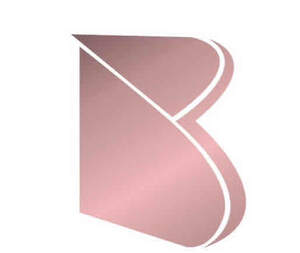

Trade Mark Journal No.2026/008 20 February 2026
UK00004332973 30 January 2026 (21,30,35,41,43)

- Class 21
- Modelling tools for fondant, sugarpaste and modelling chocolate; non stick modelling boards for fondant, sugarpaste and modelling chocolate; mixing bowls; spatulas; whisks; cake scrapers; non electric bakeware; fondant smoothers; rolling mats; non electric turntables; florist nails; baking belts; ganaching plates; cake boards; paint brushes for edible paints, lustre dusting, cocoa butter painting and fine detailing on fondant or modelling chocolate ; Baking tins; Cooling racks for baked goods; Baking utensils; Baking dishes; Baking mats; Baking containers made of glass; Baking dishes made of glass; Baking cases of paper; Baking dishes made of porcelain; Baking dishes made of earthenware; Cake tins; Cake trays; Porcelain cake decorations; Cake molds; Cake pans; Cake plates; Cake rings; Cake brushes; Cake moulds; Cake molds of non-metallic materials; Boxes for sweets; Cooking utensils; Basting spoons [cooking utensils]; Spatulas [kitchen utensils]; Moulds [kitchen utensils]; Molds [kitchen utensils]; Kitchen utensils; Cooking utensils, non-electric; Mixing spoons [kitchen utensils]; Cooking pans; Kitchen utensils of silicon; Household or kitchen utensils; Cupcake baking cups; Cooking pots; Dishes [household utensils]; Silicone baking cups; Kitchen utensils, not of precious metal; Paper cooking pots; Paper baking cups; Baking cups of paper; Cooking strainers; Graters [household utensils]; Serving utensils [pastry servers]; Sifters [household utensils]; Spatulas for kitchen use; Cookware and tableware, except forks, knives and spoons; Baking trays made of aluminium; Tableware, cookware and containers; Utensil jars; Kitchen moulds; Baking sheets of common metal; Rolling pins; Rolling pins, domestic; Rolling pins [for cooking purposes]; Cake decorating tips and tubes; Pastry brushes; Decorating bags for confectioners; Crumb brushes; Sticks for cake pops; Cake domes; Cake bases; Cupcake molds; Dusting brushes; Cake molds [moulds]; Pastry boards; Cutting boards for the kitchen; Kitchen cutting boards; Cake servers; Cake stands; Cake rests; Cutting boards; Cookie jars; Pastry bags; Cookie sheets; Cookie cutters; Cookie [biscuit] cutters; Piping bags ; Cool bags; Bakeware; Aluminium bakeware; Bakeware [not toys]; Disposable paperboard bakeware; Silicone muffin baking liners; Spatulas; Muffin pans; Baking cases of silicone; Pie pans; Kitchen mitts; Biscuit cutters; Pastry cutters; Cake moulds of common metal; Cake molds of common metal; Cake moulds of non-metallic materials; Pie tins; Pastry molds; Cookery molds; Cookery moulds; Tableware; Cake stands of non-metallic materials; Cupcake stands; Candy boxes, not of precious metal; Cooking graters.
- Class 30
- Cakescicles; custom cakes, fondant; sugarpaste; wedding cakes; celebration cakes; novelty cakes; edible decorations; red velvet cake; cookies; pastries; edible cake decorations; icing; frosting; Edible paper; Edible gold for decorating food and beverages; Edible honeycombs; Decorations [edible] for christmas trees; Chocolate decorations for cakes; Candy decorations for cakes; Candy cake decorations; Ornaments for christmas trees [edible]; Christmas tree decorations [edible]; Crystallized sugar for decorating cakes; Flavorings for cakes; Chocolate for toppings; Cake frosting; Cake frosting [icing]; Frosting [icing] (Cake -); Cupcakes; Candy coated confections; Icing for cakes; Chocolate covered cakes; Chocolate cakes; Candy cake; Chocolate decorations for confectionery items; Chocolate candy with fillings; Chocolate confections; Chocolate coated fruits; Lollipops [confectionery]; Candied cakes of popped rice; Confectionery items coated with chocolate; Cake decorations made of candy; Cake flavourings; Crystallized sugar for decorating food; Biscuits containing chocolate flavoured ingredients; Chocolate cake; Chocolate coated marshmallow biscuits containing toffee; Cake icing; Cakes; Cake batter; Sponge cake; Cake flour; Dough for cakes; Cake bars; Almond cake; Sponge cakes; Cake mixtures; Cake mixes; Pastries, cakes, tarts and biscuits (cookies); Cake powder; Powder (Cake -); Cream cakes; Cake preparations; Cake Pops; Treacle cake; Fruit cakes; Iced sponge cakes; Deep chocolate cake made with chocolate sponge; Breakfast cake; Tea cakes; Fruit cake snacks; Custard-based fillings for cakes and pies; Iced cakes; Chimney cakes; Iced fruit cakes; Buttercream [icing]; Plum cakes; Ice cream cakes; Chocolate-based fillings for cakes and pies; Rice cake snacks; Shortbread biscuits; Flour for baking; Baking soda; Baking spices; Baking powders; Baking soda [bicarbonate of soda for baking purposes]; Flour ready for baking; Flour mixtures for use in baking; Bicarbonate of soda for cooking purposes [baking soda]; Baking soda [bicarbonate of soda for cooking purposes]; Confectionery chips for baking; Pre-mixes ready for baking; Prepared baking mixes; Ready-made baking mixtures; Bicarbonate of soda for cooking purposes; Cake doughs; Pastry dough; Macaroons [pastry]; Biscotti dough; Cookie dough; Bread doughs; Powder for making cakes; Custards [baked desserts]; Pastry mixes; Pastry; Flapjacks [griddle cakes]; Chocolate for confectionery and bread; Brownies; Ready-to-bake dough products; Soda bread; Processed grains, starches, and goods made thereof, baking preparations and yeasts; Pre-baked bread; Frozen biscotti dough; Dough flour; Frozen cookie dough; Shortbread with a chocolate coating; Gluten-free bread; Mixes for the preparation of bread; Pastry cases; Bakery goods; Mirror glaze for baked goods; Foodstuffs made from dough; Chocolate fillings for bakery products; Vegan cakes; Mixes for making cakes; Rice cakes; Cakes (Rice -); Frozen cakes; Flavourings for cakes; Barm cakes; Millet cakes; Mixtures for making cakes; Moon cakes; Malt cakes; Chocolate-coated rice cakes; Aromatic preparations for cakes; Cheesecakes.
- Class 35
- Retail and online retail services, including via market stalls and pop‑up outlets, relating to non‑edible cake decorations, cake boards, cake boxes, cake ribbons, baking tools, edible decorations, bakery goods, confectionery; Retail and online retail services relating to digital baking products, namely downloadable recipe e books, downloadable baking tutorials, downloadable baking video tutorials, printable cake themed templates, downloadable digital guides and workbooks, downloadable business resources for bakers, printable and digital recipe cards, downloadable online baking classes, downloadable custom cake design templates, downloadable order management forms, downloadable bakery themed digital wallpapers; Retail services relating to candy; Retail services in relation to baked goods; Retail services in relation to foodstuffs; Retail services in relation to chocolate; Retail services in relation to confectionery; Wholesale services in relation to chocolate; Retail services in relation to desserts; Retail services in relation to homeware; Retail services in relation to bakery products; Wholesale services in relation to confectionery; Retail services in relation to cookware; Retail services relating to bakery products; Wholesale services in relation to desserts; Unmanned retail store services relating to food; Wholesale services in relation to baked goods; Retail services in relation to food cooking equipment.
- Class 41
- Education and instruction services relating to baking; providing online baking tutorials; conducting baking workshops and classes, including in‑person and online cake‑decorating courses; publishing of recipes, including digital and physical recipe books, baking guides, and educational blog content; provision of baking‑related content, including tutorials, podcasts, recipe videos, live demonstrations, and educational baking content via social media platforms; Arranging of classes; Arranging and conducting of classes; Arranging of seminars; Conducting of classes; Arranging of training courses; Arranging and conducting of workshops; Arranging of workshops and seminars; Arranging and conducting of training courses; Arranging and conducting of workshops [training].
- Class 43
- Baking and preparation of cakes and desserts; custom cake‑making services; providing baked goods to order; preparation of desserts and celebration cakes for customers; catering services specialising in baked goods, including cake‑only catering, dessert tables and event dessert services; supplying cakes and desserts for weddings, parties and corporate events; home bakery services, including made‑to‑order cake services and collection‑only or delivery‑only cake services; provision of pop‑up bakery services and hospitality‑style services, including afternoon tea services and baking for cafés under the applicant’s brand; Cake decorating; Consultancy services relating to baking techniques; Decorating of food.
Bake Envy Ltd